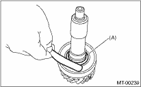

MANUAL TRANSMISSION AND DIFFERENTIAL(5MT) > Input Shaft Assembly
Disassembled parts should be washed clean first and then inspected carefully.
1. Bearing
Replace the bearings in the following cases.
• If the bearing balls, outer race or inner race is damaged or rusted
• When the bearing is worn.
• When the bearing fails to turn smoothly or makes an abnormal noise when turned, even after gear oil lubrication.
• When bearing has other defects.
2. Bushing (each gear)
Replace the bushing in following cases.
• When sliding surfaces are damaged or worn unevenly.
• When the inner wall is worn unevenly.
3. Gear
• Replace with a new gear the tooth surface is broken, damaged severely worn.
• Correct or replace if the cone that contacts the baulk ring is rough or damaged.
• Repair or replace if the inner surface or end face is damaged.
4. Baulk ring
Replace the ring in following cases:
• When the inner surface and end face are damaged.
• When the ring inner surface is excessively or partially worn down.
• When the contact surface of synchronizer ring insert is scratched or unevenly worn.
5. Shifting insert key
Replace the insert if deformed, excessively worn or defective in any way.
6. Oil seal
Replace the oil seal if the lip is deformed, hardened, worn or defective in any way.
7. O-ring
Replace the O-ring if the sealing face is deformed, hardened, damaged, worn or defective in any way.
8. Gearshift mechanism
Repair or replace the gearshift mechanism if excessively worn, bent or defective in any way.
9. Measure the clearance between the snap ring and ball bearing with a thickness gauge.
Clearance:
0 — 0.12 mm (0 — 0.0047 in)

|
(A) |
Snap ring |
If the measurement is out of specifications, reselect an appropriate snap ring.
|
Snap ring | |
|
Part number |
Thickness mm (in) |
|
805028050 |
2.48 (0.0976) |
|
805028060 |
2.56 (0.1008) |
|
805028070 |
2.64 (0.1039) |